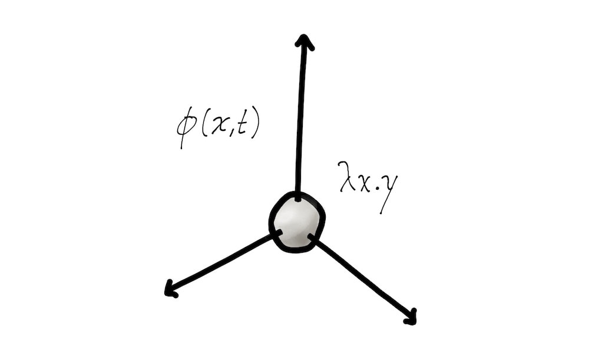

Degrees of Freedom

I have been working on some more interaction design problems, and it occurred to me that almost all computer applications seem like big multiple choice tests. How do you save a file? Well, you have a set of buttons, and menus, pick the correct answer by clicking, and then the next answer by clicking, and if you get a perfect score, you get to save the file. Sometimes there are more than one right answer to a question, sometimes questions are dependent, but in any case, it got me thinking about a not often talked about aspect of interfaces–degrees of freedom.
Degrees of Freedom for the Cognitive Science Student
I had a professor at MIT who first introduced me to this concept. Being a Cognitive Science major, the words seemed to make sense instinctually, but I never applied them with such extension as in his class.
Degrees of Freedom taken from mechanics is easy enough to understand. You have a point in space, how many ways can that point in space move? 3 ways = 3 degrees of freedom. You have a real object in space, now how many? You have 6 ways: 3 translations and 3 rotations. You have an object with a pivot point, the DOFs increase. Then he took us to simple mechanical or mathematic systems, and calculating those DOFs, and finally into organic objects such as trees, forests, ecosystems. The interesting thing was that as you move towards larger systems in our world, you realize that they have less DOFs. He made this statement in the context of Cognitive Science to imply that our brains have limited structure, limited ability, and are still very versatile, because the world that we live in provides a rather strict structure to grow and learn in, and without this strict structure, we wouldn't be as smart. But luckily, we don't have to be that smart, because we are just a part of a larger intelligent system.
Degrees of Freedom for the Knowledge Worker
As a designer, knowledge worker, or person who makes stuff with signs, symbols, objects, or thoughts, there is an interesting implication to this concept concerning the tools we use to make things in the world. As I type this post, I'm writing in Droid Sans Mono Typeface as straight text in MarsEdit on a Mac. For each letter I type, there are exactly two ways to make that letter: lowercase, and CAPITAL. Since I'm writing in markdown I could write * a * which translates to a or * * a * * which translates to a, so in actuality I have 4 questionably semantically different ways to type a single letter and there are only 26 letters, most have no meaning anyway. If I moved to RTF I could include underlining, super and subscript, color, size, font, probably bumping 4 up to 10 to 100 different expressions of a single letter. If I took out a pencil and paper, that number would skyrocket. Now looking at individual words in text, I have a similar amount of freedom. Moving to the expression of ideas, for the purpose of this blog, I'm limited to text. If you consider the ways we as human can express thoughts in meatspace, the calculation for degrees of freedom is impossible. If I wanted to protest the inclusion of Facebook in iTunes in real space, how could I go about doing that? I could paint a picture, I could ride my bike around the world screaming, I could blow up the Facebook headquarters, or Apple, I could sing a song, produce a visual documentary, create a sculpture. Here, on this blog, I have text. Text that is laid out from top to bottom, left to right. Measuring the number of logical combinations of words to express that thought is doable, measuring the possibilities in meatspace is impossible, and even an absurd concept.
So What?
So what? So think about your system. You know the system I'm talking about. Think about your storage of dreams, concepts, reference material, correspondences. Think about the mediums of communication and information storage we cling to today. Compare the number of ways can you express your love to your spouse over Twitter to the number of ways you could in the real world. The "so what" is the consideration that the medium in which we think has to influence the way we think. If I'm expressing a thought in Twitter, that thought has a limited Degree of Freedom. If I'm expressing that same thought in meatspace, my mind expands to the possibilities. The same criticism against multiple choice tests in education applies to life afterwards.
Consider Your Systems
I've been considering this because there have been many blog posts recently about text. I now have my whole life in markdown. Everything syncs between my douche bag iDevices, and I have this great sense of calm that all my knowledge is accessible all the time. But is it? What is the difference between knowledge and information? What is lost between the notebook and the .txt file? How many degrees of freedom are there in expressing an idea on a piece of paper versus an email? I'm not saying dump everything digital and go back 100 years, I'm just saying think when you need degrees of freedom, and when don't you need them or can't have them, and let's build systems for both.